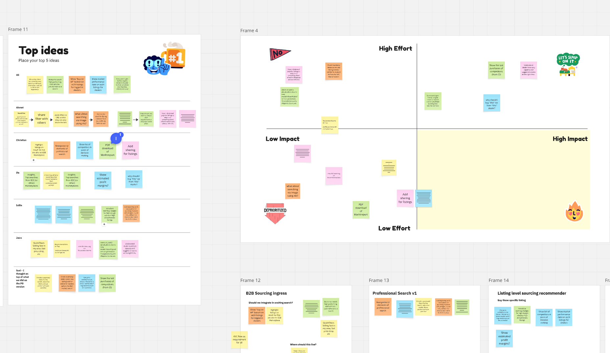
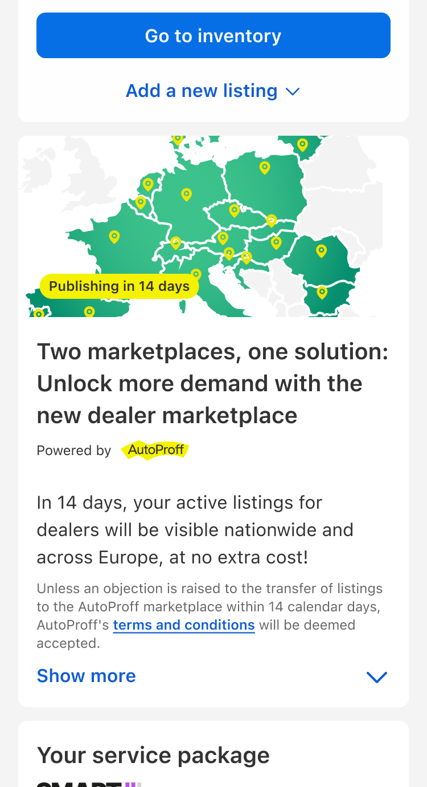
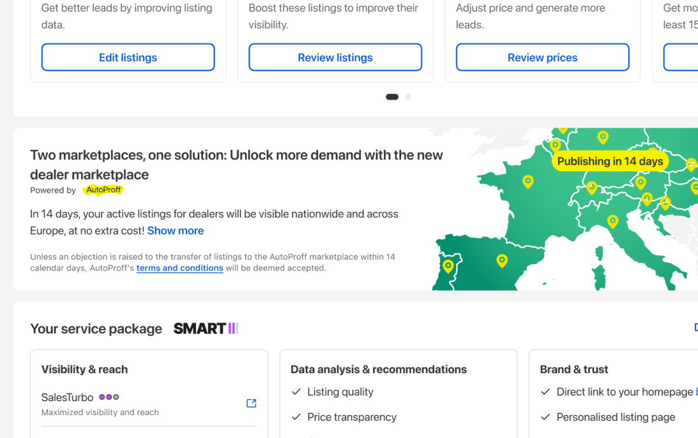
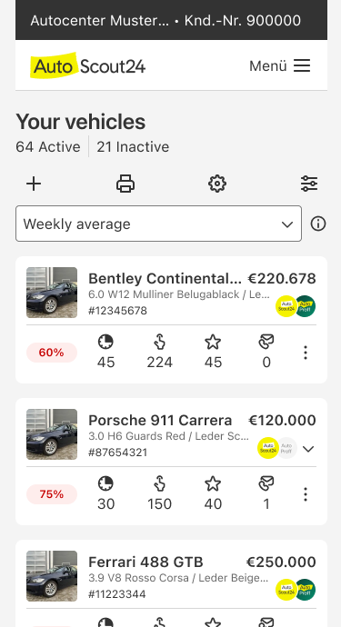
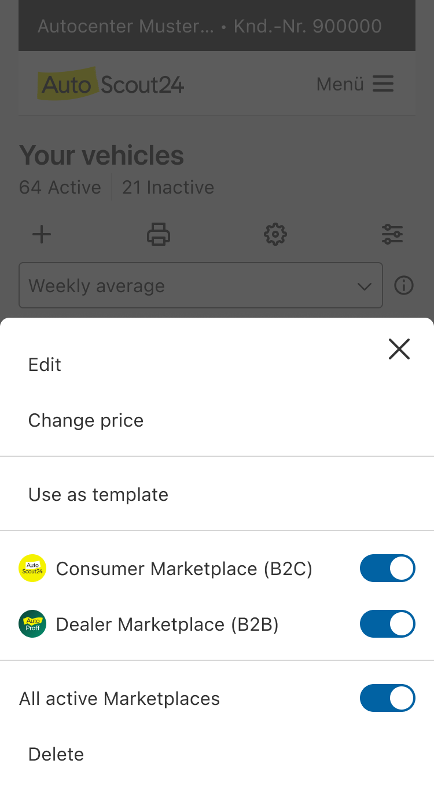
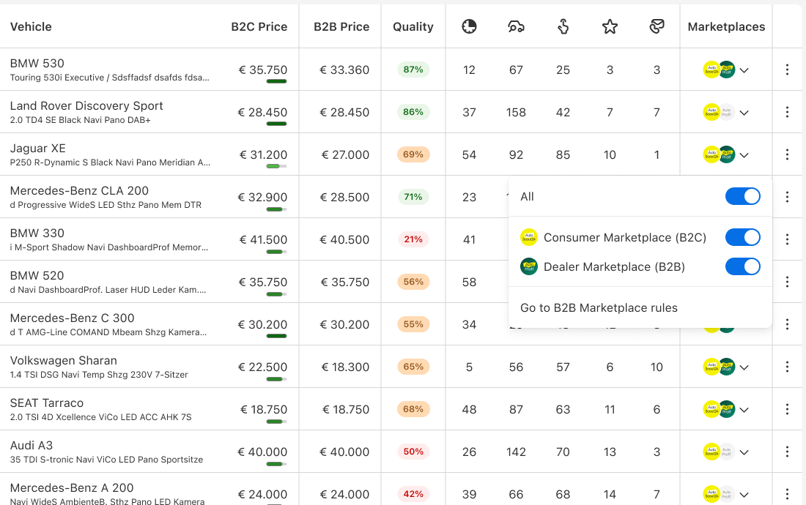
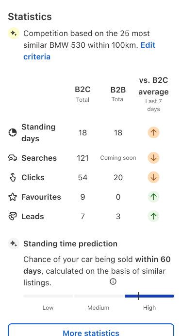
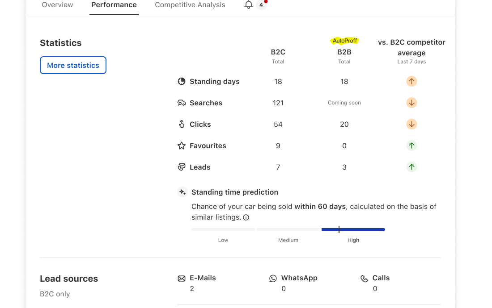
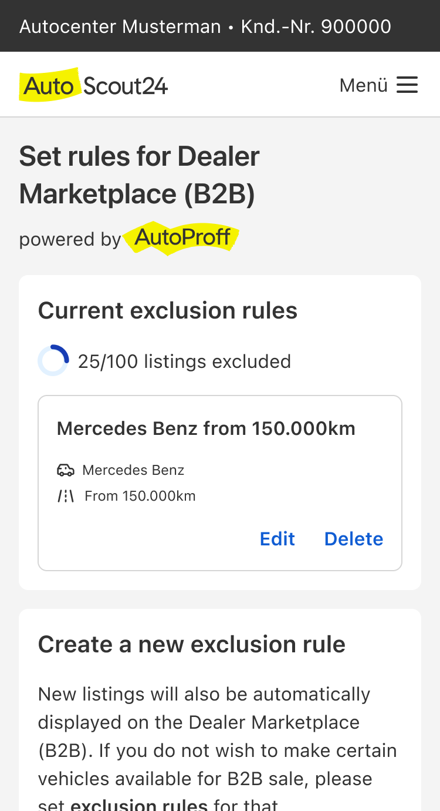
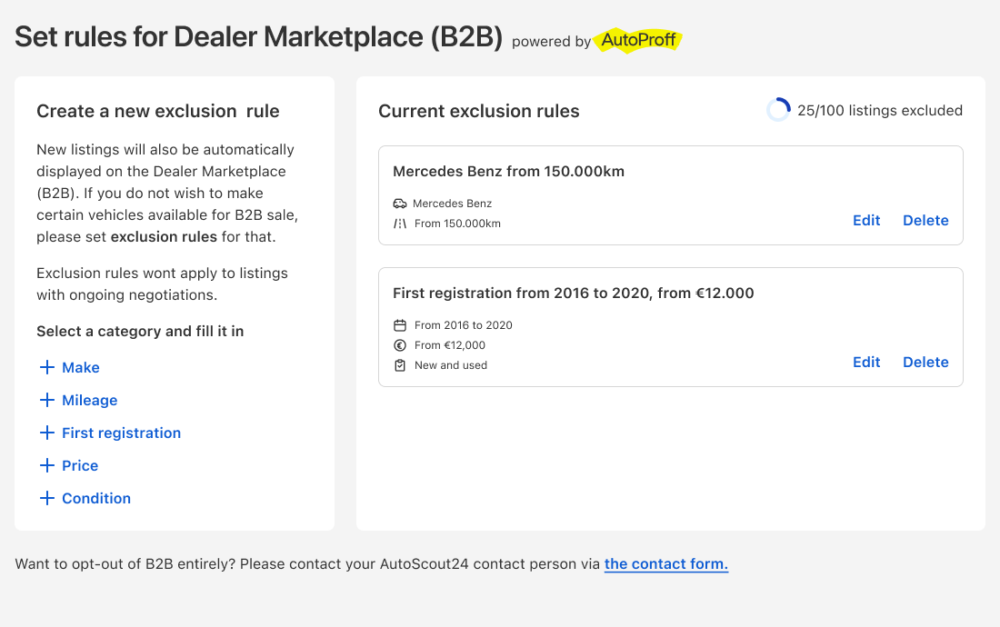

Selling Cars Across Europe
A real market opportunity, a test of scale, and what it taught us about demand.

One inventory, all of Europe
How could we use the scale of AutoScout24's Europe-wide inventory to supercharge AutoProff, our dealer-to-dealer marketplace, while helping dealers win along the way? I led design for a team of a PM, engineers, a researcher and a content designer to find out.
Success was measured in listings transferred to AutoProff. The assumption was that once the supply was there, the marketplace would take care of the rest.
Why dealers held back
With our UX researcher, I designed the research questions and interview guide, and conducted several of the interviews in Italy myself. We wanted to understand why dealers weren't using AutoProff for the same inventory they published on AutoScout24.
The findings were clear. B2B listings work differently, with their own pricing, more honest damage reporting and fewer images. They were also often less profitable than selling to consumers.

Publish once, sell across borders
I then ran a workshop to turn our findings into a prioritised list of opportunities. Adding B2B-specific information to listings was easy to solve with little effort. And we knew that opening dealers' local inventory to a European audience through AutoProff could increase their profit margins, by making use of differences in demand across markets.
I designed a flow that publishes a dealer's existing AutoScout24 listings straight to AutoProff, so there's no second marketplace to manage. To fit how B2B works, we cut the number of mandatory images and added a dedicated B2B price field and an optional B2B description.









Supply grew. Conversion stalled.
We beat the goal. Listings doubled in a single month to more than 32,000 by April 2026, and by September there were over 85,000 from Italy and Germany.
But the assumption didn’t hold. Demand arrived at a healthy rate, yet many dealers ignored the leads they received, and conversion stalled.
Supply isn’t conversion
Automatic publishing did exactly what it was meant to: it filled the marketplace. But many of those listings came from dealers who’d never chosen to sell there, so buyers’ leads went unanswered. More listings didn’t mean more sales.
What I’d do differently: test the assumption that supply drives conversion much sooner. A more gradual rollout, taking the time to understand what would convince dealers of the value before scaling up, would have shown us the conversion problem before it was spread across 85,000 listings.